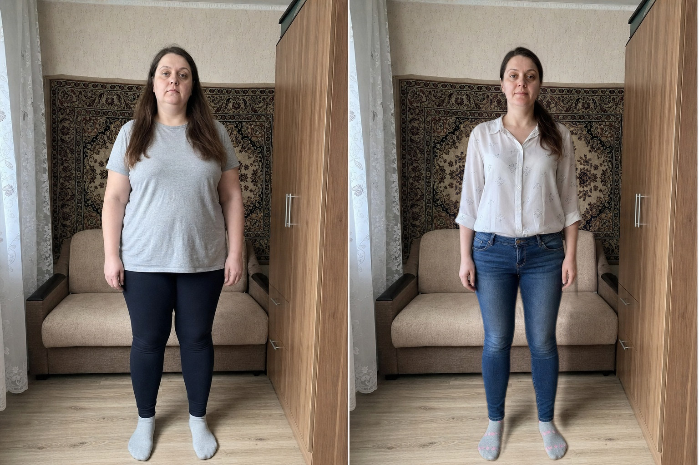
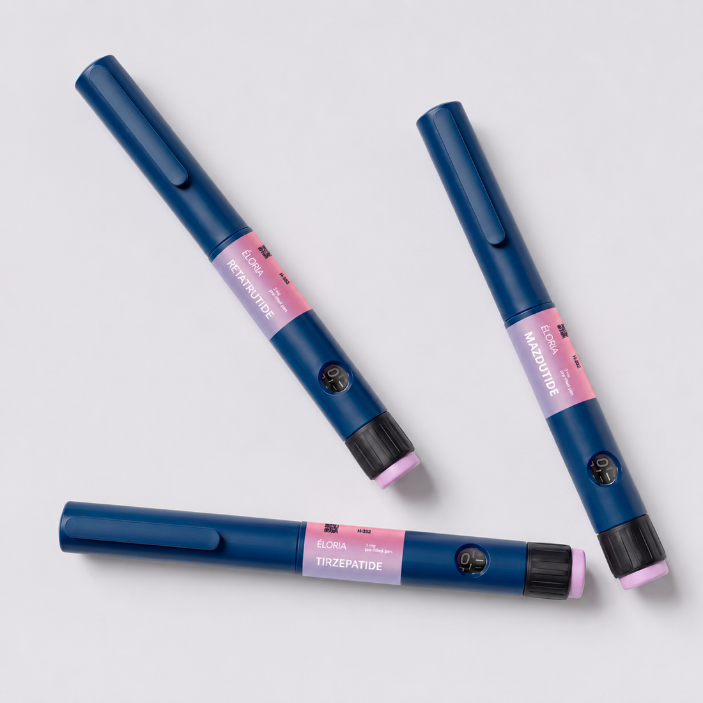

ДоПослеВалентина, 41
Рост 165 см88 → 71 кгКурс 14 нед.
«Аппетит под контролем, перестала заедать стресс».
Как клинический нутрициолог разбираю вашу ситуацию и помогаю достичь целей в снижении веса и anti-age с помощью пептидов - по вашим анализам, с точными дозировками и сопровождением на каждом этапе.
Онлайн, без оплаты. Разберем ваш запрос и подберем протокол.
Клинический и интегративный нутрициолог, 7 лет практики и более 800 клиентов. Пептидная терапия - один из моих ключевых инструментов: подбираю схемы для снижения веса и anti-age по анализам, с точными дозировками и контролем безопасности. Медицинская база и доказательный подход - то, что отличает грамотную терапию от рискованного самолечения.
Пептиды под контролем эксперта плюс питание: не только минус на весах, но и кожа, энергия, здоровье и уверенность в себе.
Пептиды помогают там, где обычные методы буксуют: вес стоит, кожа теряет тонус, нет энергии. Я подбираю схему безопасно - по анализам и под контролем эксперта.
Снижение веса, anti-age, энергия и активное долголетие - пептиды с доказанной эффективностью под контролем эксперта и с нутрициологическим сопровождением для устойчивого результата.
Пептиды дают результат только в грамотной схеме. Я выстраиваю протокол на данных ваших анализов, целях и самочувствии - с точными дозировками, доказательным подбором и контролем на каждом этапе.
Разбираю запрос, анамнез и анализы. Определяю, какие пептиды вам подходят и с чего безопасно начать.
Подбираю схему строго индивидуально: пептиды для снижения веса или anti-age под ваш организм и цель.
Составляю точный протокол: препараты, дозировки, график и совместимость с питанием и нутрицевтиками.
Веду вас на курсе: контролирую дозировки, самочувствие и безопасность, корректирую схему до результата.
Одни пептиды снижают вес и аппетит, другие работают на кожу, энергию и активное долголетие. Подбираю схему строго индивидуально - по вашим анализам, с точными дозировками и контролем на каждом этапе.
Слышали такие названия, но не понимаете, о чем речь и что подойдет именно вам?
Я разбираю каждый пептид подробно и простым языком - что это, как работает и что нужно под ваши задачи. Без сложных терминов и без давления.

Начинаем с бесплатной диагностики. Дальше - подбор протокола и сопровождение на курсе до результата.
Связываемся любым удобным способом. Знакомимся, вы рассказываете о запросе и самочувствии, я задаю уточняющие вопросы, разбираю первичные признаки и составляю рекомендации - какие пептиды вам подходят и с чего безопасно начать.
Глубинный разбор именно вашей ситуации: анализирую ваши анализы, симптомы и цели, подбираю пептиды и составляю точный протокол - препараты, дозировки, график и совместимость с питанием. Вы уходите с понятной схемой, а не с общими советами.
Веду вас на протяжении курса: мы на связи, я контролирую дозировки, самочувствие и безопасность, корректирую схему по вашей динамике и помогаю закрепить результат надолго.
Реальные истории женщин, которые прошли пептидную терапию под контролем и получили результат.
«За два месяца ушли 6 кг без жестких ограничений, а главное - вернулась энергия. Наталия объясняет каждый шаг простым языком».
«Разобрались со щитовидкой и циклом. Впервые вижу системный подход по анализам, а не общие советы из интернета».
«Прошла сопровождение с пептидами под контролем Наталии. Все четко, безопасно и с результатом. Рекомендую».
«Забыла про вздутие и тяжесть после еды. Наладили питание, и живот наконец спокойный весь день».
«Ушла постоянная усталость и туман в голове. Утром просыпаюсь бодрая, чего не было уже несколько лет».
«Думала, после 45 вес уже не сдвинуть. Сдвинули, и он держится. Спасибо за терпение и поддержку».
«Готовились к беременности: привели в порядок дефициты и цикл. Наталия всегда на связи и все поясняет».
«Кожа, сон, настроение - все подтянулось. Это не диета, а образ жизни, который реально нравится».
«Кожа стала плотнее, мелкие морщинки сгладились, лицо будто отдохнуло. Пептиды и уход подобрали под мое состояние».
«Снижала вес на семаглутиде строго под контролем Наталии - без побочек и качелей. Минус 11 кг, и вес держится».
«Пептиды для энергии и питание вернули силы: к вечеру больше нет упадка, а выгляжу заметно свежее».
Оставьте заявку - я свяжусь с вами, отвечу на вопросы и мы подберем протокол под ваши задачи. Бесплатно, без спама и давления.